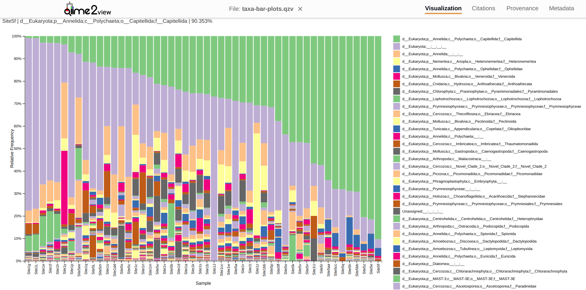

INTRO
Performed taxonomic assignment for the July 18 Yellow Island sites for project-eDNA-yellow (GitHub repo) project using QIIME 2 analysis, as requested in this GitHub Issue.
The resulting taxonomic output file is a QIIME 2 bar plot visualization. This can be downloaded (either by using the link below or by cloning this project’s repo) and then uploaded to the QIIME 2 Viewer website. This provides interactive viewing/filtering/sorting of taxonomic assignments.
The contents below are from markdown knitted from 02.00-qiime2.Rmd (commit 01f599e4e).
1 BACKGROUND
This notebook will use QIIME 2 2024.10 (Bolyen et al. 2019) to taxonomically classify eukaryotic sequences in eDNA samples. Expects trimmed reads to exist in ../output/01.00-trimming-fastp-fastqc-multiqc.
1.1 Inputs:
Trimmed FastQs from
01.00-trimming-fastp-fastqc-multiqc.Rmd- Filename format:
fastp-Yell-July18-Site5e_S95_L001_R1_001.fastq.gz
- Filename format:
SILVA classifier QZA
silva-138-99-nb-classifier.qza.
1.2 Outputs:
Files ending in .qza are QIIME zip archives.
Files ending in .qzv are QIIME zip visualization tables.
deblur-stats.qza: Stats after denoise.deblur-stats.qzv: Stats visualization after denoise.demux-paired-end-filtered.qza: Quality score filtered archive.demux-paired-end-filter-stats.qza: Stats archive for quality score filtering.demux-paired-end.qza: Paired-end reads archive.rep-seqs-deblur.qza: Representative sequences after denoise.rep-seqs-deblur.qzv: Representative sequences after denoise visualization.table-deblur.qza: Table after denoise.table.qzv: Feature table summary visuallization.taxa-bar-plots.qzv: Bar plots of taxonomic assignment visualization.taxonomy.qza: Feature taxonomic classification after applying SILVA classifier.taxonomy.qzv: Feature taxonomic classification visualization after applying SILVA classifier.
Software requirements:
- Utilizes a
qiime2-amplicon-2024.10Conda/Mamba environment, per the installation instructions.
To use on your own system, replace with name of your qiime2-amplicon-2024.10 environment and the path to the corresponding conda installation (find this after you’ve activated the environment).
E.g.
# Activate environment
conda activate ShortStack4_env
# Find conda path
which conda2 Set R variables
Change repo_dir to match local repo location.
Change threads <- 4 to match computer resources for your system.
# Conda info
qiime2_conda_env_name <- c("qiime2-amplicon-2024.10")
qiime2_conda_path <- c("/home/sam/programs/miniforge3/condabin/conda")
# Data directories
repo_dir <- "/home/sam/gitrepos/RobertsLab/project-eDNA-yellow"
data_dir <- file.path(repo_dir, "data")
output_dir <- file.path(repo_dir, "output", "02.00-qiime2")
trimmed_reads_dir <- file.path(repo_dir, "output", "01.00-trimming-fastp-fastqc-multiqc")
# Files
metadata <- file.path(data_dir, "raw-fastqs", "metadata.tsv")
silva_classifier <- file.path(data_dir, "silva-138-99-nb-classifier.qza")
silva_ref_seqs <- file.path(data_dir, "silva-138-99-seqs.qza")
# Parameters
## Set Deblur read length
## Based on FastQC results, post-trimming, where quality starts to decline.
deblur_ptrim_length <- 150
# CPUs
threads <- 4
# Export these as environment variables for bash chunks.
Sys.setenv(
data_dir = data_dir,
deblur_ptrim_length = deblur_ptrim_length,
metadata = metadata,
silva_classifier = silva_classifier,
silva_ref_seqs = silva_ref_seqs,
threads = threads,
trimmed_reads_dir = trimmed_reads_dir,
output_dir = output_dir
)3 Load qiime2-amplicon-2024.10 conda environment
If this is successful, the first line of output should show that the Python being used is the one in your qiime2-amplicon-2024.10 conda environment path.
E.g.
python: /home/sam/programs/mambaforge/envs/mirmachine_env/bin/python
use_condaenv(condaenv = qiime2_conda_env_name, conda = qiime2_conda_path)
# Check successful env loading
py_config()python: /home/sam/programs/miniforge3/envs/qiime2-amplicon-2024.10/bin/python
libpython: /home/sam/programs/miniforge3/envs/qiime2-amplicon-2024.10/lib/libpython3.10.so
pythonhome: /home/sam/programs/miniforge3/envs/qiime2-amplicon-2024.10:/home/sam/programs/miniforge3/envs/qiime2-amplicon-2024.10
version: 3.10.14 | packaged by conda-forge | (main, Mar 20 2024, 12:45:18) [GCC 12.3.0]
numpy: /home/sam/programs/miniforge3/envs/qiime2-amplicon-2024.10/lib/python3.10/site-packages/numpy
numpy_version: 1.26.4
NOTE: Python version was forced by use_python() function4 Import trimmed reads
4.1 Transfer trimmed reads
# Make output directory if it doesn't exist
mkdir --parents "${output_dir}"
rsync -avP "${trimmed_reads_dir}"/*.fastq.gz "${output_dir}"
ls -lh "${output_dir}"sending incremental file list
Site1J_S99_L001_R1_001.fastq.gz
32,768 3% 0.00kB/s 0:00:00 1,049,054 100% 969.21MB/s 0:00:00 (xfr#1, to-chk=107/108)
Site1J_S99_L001_R2_001.fastq.gz
32,768 3% 15.62MB/s 0:00:00 870,682 100% 207.59MB/s 0:00:00 (xfr#2, to-chk=106/108)
Site1L_S101_L001_R1_001.fastq.gz
32,768 1% 7.81MB/s 0:00:00 2,695,538 100% 321.33MB/s 0:00:00 (xfr#3, to-chk=105/108)
Site1L_S101_L001_R2_001.fastq.gz
32,768 1% 3.91MB/s 0:00:00 3,045,986 100% 223.45MB/s 0:00:00 (xfr#4, to-chk=104/108)
Site1U_S114_L001_R1_001.fastq.gz
32,768 0% 2.40MB/s 0:00:01 3,303,317 100% 175.02MB/s 0:00:00 (xfr#5, to-chk=103/108)
Site1U_S114_L001_R2_001.fastq.gz
32,768 0% 1.74MB/s 0:00:02 3,694,663 100% 146.81MB/s 0:00:00 (xfr#6, to-chk=102/108)
Site1a_S83_L001_R1_001.fastq.gz
32,768 0% 1.30MB/s 0:00:07 10,094,265 100% 178.27MB/s 0:00:00 (xfr#7, to-chk=101/108)
Site1a_S83_L001_R2_001.fastq.gz
32,768 0% 592.59kB/s 0:00:18 10,924,826 100% 127.06MB/s 0:00:00 (xfr#8, to-chk=100/108)
Site1b_S84_L001_R1_001.fastq.gz
32,768 0% 390.24kB/s 0:00:24 9,597,931 100% 87.17MB/s 0:00:00 (xfr#9, to-chk=99/108)
Site1b_S84_L001_R2_001.fastq.gz
32,768 0% 304.76kB/s 0:00:34 10,396,372 100% 71.85MB/s 0:00:00 (xfr#10, to-chk=98/108)
Site1bb_S139_L001_R1_001.fastq.gz
32,768 0% 231.88kB/s 0:00:31 7,292,087 100% 44.58MB/s 0:00:00 (xfr#11, to-chk=97/108)
Site1bb_S139_L001_R2_001.fastq.gz
32,768 0% 203.82kB/s 0:00:38 7,812,044 100% 43.82MB/s 0:00:00 (xfr#12, to-chk=96/108)
Site1c_S85_L001_R1_001.fastq.gz
32,768 0% 188.24kB/s 0:00:37 7,079,940 100% 34.45MB/s 0:00:00 (xfr#13, to-chk=95/108)
Site1c_S85_L001_R2_001.fastq.gz
32,768 0% 163.27kB/s 0:00:47 7,720,428 100% 34.73MB/s 0:00:00 (xfr#14, to-chk=94/108)
Site1cc_S140_L001_R1_001.fastq.gz
32,768 0% 150.23kB/s 0:01:55 17,422,172 100% 67.27MB/s 0:00:00 (xfr#15, to-chk=93/108)
Site1cc_S140_L001_R2_001.fastq.gz
32,768 0% 129.03kB/s 0:02:29 19,271,102 100% 62.09MB/s 0:00:00 (xfr#16, to-chk=92/108)
Site1d_S86_L001_R1_001.fastq.gz
32,768 0% 107.74kB/s 0:01:31 9,882,039 100% 29.27MB/s 0:00:00 (xfr#17, to-chk=91/108)
Site1d_S86_L001_R2_001.fastq.gz
32,768 0% 99.38kB/s 0:01:50 10,999,755 100% 30.23MB/s 0:00:00 (xfr#18, to-chk=90/108)
Site1dd_S141_L001_R1_001.fastq.gz
32,768 0% 91.95kB/s 0:03:24 18,882,154 100% 46.89MB/s 0:00:00 (xfr#19, to-chk=89/108)
Site1dd_S141_L001_R2_001.fastq.gz
32,768 0% 83.33kB/s 0:03:48 19,062,705 100% 42.98MB/s 0:00:00 (xfr#20, to-chk=88/108)
Site1e_S91_L001_R1_001.fastq.gz
32,768 2% 75.65kB/s 0:00:21 1,632,564 100% 3.65MB/s 0:00:00 (xfr#21, to-chk=87/108)
Site1e_S91_L001_R2_001.fastq.gz
32,768 1% 74.94kB/s 0:00:22 1,709,840 100% 3.78MB/s 0:00:00 (xfr#22, to-chk=86/108)
Site1ee_S142_L001_R1_001.fastq.gz
32,768 0% 74.25kB/s 0:02:35 11,554,889 100% 24.17MB/s 0:00:00 (xfr#23, to-chk=85/108)
Site1ee_S142_L001_R2_001.fastq.gz
32,768 0% 70.18kB/s 0:02:43 11,489,305 100% 22.73MB/s 0:00:00 (xfr#24, to-chk=84/108)
Site1f_S92_L001_R1_001.fastq.gz
32,768 0% 66.39kB/s 0:02:39 10,637,646 100% 19.81MB/s 0:00:00 (xfr#25, to-chk=83/108)
Site1f_S92_L001_R2_001.fastq.gz
32,768 0% 62.50kB/s 0:03:06 11,684,921 100% 20.56MB/s 0:00:00 (xfr#26, to-chk=82/108)
Site1g_S93_L001_R1_001.fastq.gz
32,768 0% 59.04kB/s 0:02:50 10,116,667 100% 17.11MB/s 0:00:00 (xfr#27, to-chk=81/108)
Site1g_S93_L001_R2_001.fastq.gz
32,768 0% 56.74kB/s 0:03:14 11,076,204 100% 17.55MB/s 0:00:00 (xfr#28, to-chk=80/108)
Site1h_S94_L001_R1_001.fastq.gz
32,768 0% 53.16kB/s 0:01:08 3,661,936 100% 5.71MB/s 0:00:00 (xfr#29, to-chk=79/108)
Site1h_S94_L001_R2_001.fastq.gz
32,768 0% 52.29kB/s 0:01:14 3,944,595 100% 6.01MB/s 0:00:00 (xfr#30, to-chk=78/108)
Site1k_S100_L001_R1_001.fastq.gz
32,768 0% 51.12kB/s 0:02:24 7,419,423 100% 10.94MB/s 0:00:00 (xfr#31, to-chk=77/108)
Site1k_S100_L001_R2_001.fastq.gz
32,768 0% 49.46kB/s 0:02:27 7,329,144 100% 10.31MB/s 0:00:00 (xfr#32, to-chk=76/108)
Site1m_S102_L001_R1_001.fastq.gz
32,768 0% 47.13kB/s 0:03:38 10,344,255 100% 14.05MB/s 0:00:00 (xfr#33, to-chk=75/108)
Site1m_S102_L001_R2_001.fastq.gz
32,768 0% 45.58kB/s 0:03:58 10,925,572 100% 14.37MB/s 0:00:00 (xfr#34, to-chk=74/108)
Site1n_S103_L001_R1_001.fastq.gz
32,768 0% 44.14kB/s 0:05:09 13,696,893 100% 16.68MB/s 0:00:00 (xfr#35, to-chk=73/108)
Site1n_S103_L001_R2_001.fastq.gz
32,768 0% 40.87kB/s 0:06:14 15,317,828 100% 17.27MB/s 0:00:00 (xfr#36, to-chk=72/108)
Site1o_S104_L001_R1_001.fastq.gz
32,768 0% 37.78kB/s 0:05:24 12,295,963 100% 13.51MB/s 0:00:00 (xfr#37, to-chk=71/108)
Site1o_S104_L001_R2_001.fastq.gz
32,768 0% 36.87kB/s 0:06:08 13,599,819 100% 14.59MB/s 0:00:00 (xfr#38, to-chk=70/108)
Site1p_S105_L001_R1_001.fastq.gz
32,768 0% 36.00kB/s 0:26:25 57,109,173 100% 54.68MB/s 0:00:00 (xfr#39, to-chk=69/108)
Site1p_S105_L001_R2_001.fastq.gz
32,768 0% 32.10kB/s 0:30:03 1,376,256 2% 1.31MB/s 0:00:42 57,912,100 100% 49.01MB/s 0:00:01 (xfr#40, to-chk=68/108)
Site1q_S106_L001_R1_001.fastq.gz
32,768 0% 250.00kB/s 0:00:23 6,030,256 100% 34.64MB/s 0:00:00 (xfr#41, to-chk=67/108)
Site1q_S106_L001_R2_001.fastq.gz
32,768 0% 191.62kB/s 0:00:33 6,469,667 100% 33.35MB/s 0:00:00 (xfr#42, to-chk=66/108)
Site1r_S111_L001_R1_001.fastq.gz
32,768 0% 172.97kB/s 0:00:50 8,838,881 100% 41.73MB/s 0:00:00 (xfr#43, to-chk=65/108)
Site1r_S111_L001_R2_001.fastq.gz
32,768 0% 158.42kB/s 0:01:02 10,009,537 100% 43.99MB/s 0:00:00 (xfr#44, to-chk=64/108)
Site1s_S112_L001_R1_001.fastq.gz
32,768 0% 147.47kB/s 0:01:23 12,401,363 100% 49.28MB/s 0:00:00 (xfr#45, to-chk=63/108)
Site1s_S112_L001_R2_001.fastq.gz
32,768 0% 132.78kB/s 0:01:41 13,539,813 100% 43.48MB/s 0:00:00 (xfr#46, to-chk=62/108)
Site1t_S113_L001_R1_001.fastq.gz
32,768 0% 107.74kB/s 0:01:48 11,735,076 100% 33.51MB/s 0:00:00 (xfr#47, to-chk=61/108)
Site1t_S113_L001_R2_001.fastq.gz
32,768 0% 95.52kB/s 0:02:18 13,260,345 100% 27.85MB/s 0:00:00 (xfr#48, to-chk=60/108)
Site1v_S117_L001_R1_001.fastq.gz
32,768 0% 69.87kB/s 0:02:13 9,342,851 100% 17.82MB/s 0:00:00 (xfr#49, to-chk=59/108)
Site1v_S117_L001_R2_001.fastq.gz
32,768 0% 64.00kB/s 0:02:41 10,359,447 100% 19.07MB/s 0:00:00 (xfr#50, to-chk=58/108)
Site1w_S118_L001_R1_001.fastq.gz
32,768 0% 61.66kB/s 0:02:41 9,964,110 100% 17.60MB/s 0:00:00 (xfr#51, to-chk=57/108)
Site1w_S118_L001_R2_001.fastq.gz
32,768 0% 59.26kB/s 0:03:06 11,075,680 100% 17.40MB/s 0:00:00 (xfr#52, to-chk=56/108)
Site1y_S120_L001_R1_001.fastq.gz
32,768 0% 52.72kB/s 0:02:43 8,648,625 100% 12.93MB/s 0:00:00 (xfr#53, to-chk=55/108)
Site1y_S120_L001_R2_001.fastq.gz
32,768 0% 50.16kB/s 0:03:13 9,735,967 100% 14.13MB/s 0:00:00 (xfr#54, to-chk=54/108)
Site1z_S129_L001_R1_001.fastq.gz
32,768 0% 48.71kB/s 0:02:21 6,906,228 100% 9.82MB/s 0:00:00 (xfr#55, to-chk=53/108)
Site1z_S129_L001_R2_001.fastq.gz
32,768 0% 47.69kB/s 0:02:38 7,594,675 100% 10.57MB/s 0:00:00 (xfr#56, to-chk=52/108)
Site5J_S107_L001_R1_001.fastq.gz
3,152 100% 4.49kB/s 0:00:00 3,152 100% 4.49kB/s 0:00:00 (xfr#57, to-chk=51/108)
Site5J_S107_L001_R2_001.fastq.gz
3,267 100% 4.66kB/s 0:00:00 3,267 100% 4.66kB/s 0:00:00 (xfr#58, to-chk=50/108)
Site5L_S109_L001_R1_001.fastq.gz
32,768 0% 46.72kB/s 0:03:46 10,591,641 100% 14.43MB/s 0:00:00 (xfr#59, to-chk=49/108)
Site5L_S109_L001_R2_001.fastq.gz
32,768 0% 45.71kB/s 0:04:29 12,335,179 100% 16.25MB/s 0:00:00 (xfr#60, to-chk=48/108)
Site5a_S87_L001_R1_001.fastq.gz
32,768 0% 44.20kB/s 0:02:09 5,736,372 100% 7.41MB/s 0:00:00 (xfr#61, to-chk=47/108)
Site5a_S87_L001_R2_001.fastq.gz
32,768 0% 43.36kB/s 0:02:35 6,756,033 100% 8.63MB/s 0:00:00 (xfr#62, to-chk=46/108)
Site5aa_S132_L001_R1_001.fastq.gz
32,768 0% 42.78kB/s 0:06:43 17,275,560 100% 21.07MB/s 0:00:00 (xfr#63, to-chk=45/108)
Site5aa_S132_L001_R2_001.fastq.gz
32,768 0% 40.92kB/s 0:07:38 18,803,462 100% 21.66MB/s 0:00:00 (xfr#64, to-chk=44/108)
Site5b_S88_L001_R1_001.fastq.gz
32,768 0% 38.60kB/s 0:03:54 9,073,525 100% 10.25MB/s 0:00:00 (xfr#65, to-chk=43/108)
Site5b_S88_L001_R2_001.fastq.gz
32,768 0% 37.91kB/s 0:04:42 10,726,254 100% 11.88MB/s 0:00:00 (xfr#66, to-chk=42/108)
Site5bb_S133_L001_R1_001.fastq.gz
32,768 0% 37.12kB/s 0:09:28 21,123,332 100% 22.36MB/s 0:00:00 (xfr#67, to-chk=41/108)
Site5bb_S133_L001_R2_001.fastq.gz
32,768 0% 35.52kB/s 0:11:02 23,551,318 100% 23.67MB/s 0:00:00 (xfr#68, to-chk=40/108)
Site5c_S89_L001_R1_001.fastq.gz
32,768 0% 33.72kB/s 0:01:52 3,809,576 100% 3.76MB/s 0:00:00 (xfr#69, to-chk=39/108)
Site5c_S89_L001_R2_001.fastq.gz
32,768 0% 33.09kB/s 0:02:01 4,045,650 100% 3.91MB/s 0:00:00 (xfr#70, to-chk=38/108)
Site5cc_S134_L001_R1_001.fastq.gz
32,768 0% 32.39kB/s 0:11:49 2,195,456 9% 2.09MB/s 0:00:09 23,024,076 100% 20.81MB/s 0:00:01 (xfr#71, to-chk=37/108)
Site5cc_S134_L001_R2_001.fastq.gz
32,768 0% 581.82kB/s 0:00:47 27,433,098 100% 261.62MB/s 0:00:00 (xfr#72, to-chk=36/108)
Site5e_S95_L001_R1_001.fastq.gz
32,768 0% 316.83kB/s 0:00:39 12,623,394 100% 91.90MB/s 0:00:00 (xfr#73, to-chk=35/108)
Site5e_S95_L001_R2_001.fastq.gz
32,768 0% 244.27kB/s 0:00:55 13,593,516 100% 83.64MB/s 0:00:00 (xfr#74, to-chk=34/108)
Site5ee_S136_L001_R1_001.fastq.gz
32,768 0% 205.13kB/s 0:01:10 14,409,417 100% 73.49MB/s 0:00:00 (xfr#75, to-chk=33/108)
Site5ee_S136_L001_R2_001.fastq.gz
32,768 0% 171.12kB/s 0:01:34 16,177,439 100% 67.08MB/s 0:00:00 (xfr#76, to-chk=32/108)
Site5f_S96_L001_R1_001.fastq.gz
32,768 4% 139.13kB/s 0:00:04 687,567 100% 2.83MB/s 0:00:00 (xfr#77, to-chk=31/108)
Site5f_S96_L001_R2_001.fastq.gz
32,768 5% 137.93kB/s 0:00:04 586,382 100% 2.39MB/s 0:00:00 (xfr#78, to-chk=30/108)
Site5ff_S137_L001_R1_001.fastq.gz
32,768 0% 136.75kB/s 0:03:08 25,791,900 100% 84.53MB/s 0:00:00 (xfr#79, to-chk=29/108)
Site5ff_S137_L001_R2_001.fastq.gz
32,768 0% 109.97kB/s 0:04:22 28,940,772 100% 76.67MB/s 0:00:00 (xfr#80, to-chk=28/108)
Site5g_S97_L001_R1_001.fastq.gz
32,768 0% 88.89kB/s 0:01:43 9,192,625 100% 23.01MB/s 0:00:00 (xfr#81, to-chk=27/108)
Site5g_S97_L001_R2_001.fastq.gz
32,768 0% 83.99kB/s 0:02:01 10,215,095 100% 24.35MB/s 0:00:00 (xfr#82, to-chk=26/108)
Site5h_S98_L001_R1_001.fastq.gz
32,768 0% 80.00kB/s 0:02:36 12,583,460 100% 27.97MB/s 0:00:00 (xfr#83, to-chk=25/108)
Site5h_S98_L001_R2_001.fastq.gz
32,768 0% 74.59kB/s 0:03:00 13,492,257 100% 28.22MB/s 0:00:00 (xfr#84, to-chk=24/108)
Site5k_S108_L001_R1_001.fastq.gz
32,768 0% 70.18kB/s 0:00:49 3,490,162 100% 7.19MB/s 0:00:00 (xfr#85, to-chk=23/108)
Site5k_S108_L001_R2_001.fastq.gz
32,768 0% 68.97kB/s 0:01:03 4,381,885 100% 8.85MB/s 0:00:00 (xfr#86, to-chk=22/108)
Site5m_S110_L001_R1_001.fastq.gz
32,768 0% 67.80kB/s 0:01:33 6,394,434 100% 12.60MB/s 0:00:00 (xfr#87, to-chk=21/108)
Site5m_S110_L001_R2_001.fastq.gz
32,768 0% 65.98kB/s 0:01:50 7,315,926 100% 13.95MB/s 0:00:00 (xfr#88, to-chk=20/108)
Site5n_S115_L001_R1_001.fastq.gz
32,768 0% 64.00kB/s 0:01:38 6,337,613 100% 11.80MB/s 0:00:00 (xfr#89, to-chk=19/108)
Site5n_S115_L001_R2_001.fastq.gz
32,768 0% 62.50kB/s 0:01:49 6,878,872 100% 12.42MB/s 0:00:00 (xfr#90, to-chk=18/108)
Site5o_S116_L001_R1_001.fastq.gz
32,768 0% 60.61kB/s 0:01:39 6,076,898 100% 10.71MB/s 0:00:00 (xfr#91, to-chk=17/108)
Site5o_S116_L001_R2_001.fastq.gz
32,768 0% 59.15kB/s 0:01:51 6,648,513 100% 11.40MB/s 0:00:00 (xfr#92, to-chk=16/108)
Site5p_S121_L001_R1_001.fastq.gz
32,768 0% 57.45kB/s 0:02:19 8,050,112 100% 13.24MB/s 0:00:00 (xfr#93, to-chk=15/108)
Site5p_S121_L001_R2_001.fastq.gz
32,768 0% 55.08kB/s 0:02:45 9,138,963 100% 14.41MB/s 0:00:00 (xfr#94, to-chk=14/108)
Site5q_S122_L001_R1_001.fastq.gz
32,768 0% 52.89kB/s 0:04:56 15,700,699 100% 23.25MB/s 0:00:00 (xfr#95, to-chk=13/108)
Site5q_S122_L001_R2_001.fastq.gz
32,768 0% 49.69kB/s 0:05:23 16,118,120 100% 22.77MB/s 0:00:00 (xfr#96, to-chk=12/108)
Site5r_S123_L001_R1_001.fastq.gz
32,768 0% 47.41kB/s 0:03:24 9,712,950 100% 13.33MB/s 0:00:00 (xfr#97, to-chk=11/108)
Site5r_S123_L001_R2_001.fastq.gz
32,768 0% 46.04kB/s 0:03:55 10,897,039 100% 14.51MB/s 0:00:00 (xfr#98, to-chk=10/108)
Site5s_S124_L001_R1_001.fastq.gz
32,768 0% 44.69kB/s 0:02:43 7,340,512 100% 9.56MB/s 0:00:00 (xfr#99, to-chk=9/108)
Site5s_S124_L001_R2_001.fastq.gz
32,768 0% 43.72kB/s 0:03:19 8,732,252 100% 11.12MB/s 0:00:00 (xfr#100, to-chk=8/108)
Site5u_S126_L001_R1_001.fastq.gz
32,768 0% 42.72kB/s 0:01:57 5,033,056 100% 6.32MB/s 0:00:00 (xfr#101, to-chk=7/108)
Site5u_S126_L001_R2_001.fastq.gz
32,768 0% 42.16kB/s 0:02:11 5,584,122 100% 6.90MB/s 0:00:00 (xfr#102, to-chk=6/108)
Site5v_S127_L001_R1_001.fastq.gz
32,768 0% 41.45kB/s 0:01:43 4,309,446 100% 5.26MB/s 0:00:00 (xfr#103, to-chk=5/108)
Site5v_S127_L001_R2_001.fastq.gz
32,768 0% 40.97kB/s 0:01:56 4,795,986 100% 5.78MB/s 0:00:00 (xfr#104, to-chk=4/108)
Site5w_S128_L001_R1_001.fastq.gz
1,181 100% 1.46kB/s 0:00:00 1,181 100% 1.46kB/s 0:00:00 (xfr#105, to-chk=3/108)
Site5w_S128_L001_R2_001.fastq.gz
1,265 100% 1.56kB/s 0:00:00 1,265 100% 1.56kB/s 0:00:00 (xfr#106, to-chk=2/108)
Site5z_S131_L001_R1_001.fastq.gz
32,768 0% 40.46kB/s 0:14:08 34,377,141 100% 37.64MB/s 0:00:00 (xfr#107, to-chk=1/108)
Site5z_S131_L001_R2_001.fastq.gz
32,768 0% 36.74kB/s 0:17:11 37,920,700 100% 37.55MB/s 0:00:00 (xfr#108, to-chk=0/108)
sent 1,198,592,058 bytes received 2,068 bytes 342,455,464.57 bytes/sec
total size is 1,198,291,484 speedup is 1.00
total 2.7G
-rw-rw-r-- 1 sam sam 406M Apr 24 07:43 demux-paired-end-filtered.qza
-rw-rw-r-- 1 sam sam 17K Apr 24 07:43 demux-paired-end-filter-stats.qza
-rw-rw-r-- 1 sam sam 1.2G Apr 24 07:23 demux-paired-end.qza
-rw-rw-r-- 1 sam sam 9.7M Apr 22 16:49 Site1a_S83_L001_R1_001.fastq.gz
-rw-rw-r-- 1 sam sam 11M Apr 22 16:49 Site1a_S83_L001_R2_001.fastq.gz
-rw-rw-r-- 1 sam sam 7.0M Apr 22 16:49 Site1bb_S139_L001_R1_001.fastq.gz
-rw-rw-r-- 1 sam sam 7.5M Apr 22 16:49 Site1bb_S139_L001_R2_001.fastq.gz
-rw-rw-r-- 1 sam sam 9.2M Apr 22 16:50 Site1b_S84_L001_R1_001.fastq.gz
-rw-rw-r-- 1 sam sam 10M Apr 22 16:50 Site1b_S84_L001_R2_001.fastq.gz
-rw-rw-r-- 1 sam sam 17M Apr 22 16:50 Site1cc_S140_L001_R1_001.fastq.gz
-rw-rw-r-- 1 sam sam 19M Apr 22 16:50 Site1cc_S140_L001_R2_001.fastq.gz
-rw-rw-r-- 1 sam sam 6.8M Apr 22 16:51 Site1c_S85_L001_R1_001.fastq.gz
-rw-rw-r-- 1 sam sam 7.4M Apr 22 16:51 Site1c_S85_L001_R2_001.fastq.gz
-rw-rw-r-- 1 sam sam 19M Apr 22 16:51 Site1dd_S141_L001_R1_001.fastq.gz
-rw-rw-r-- 1 sam sam 19M Apr 22 16:51 Site1dd_S141_L001_R2_001.fastq.gz
-rw-rw-r-- 1 sam sam 9.5M Apr 22 16:52 Site1d_S86_L001_R1_001.fastq.gz
-rw-rw-r-- 1 sam sam 11M Apr 22 16:52 Site1d_S86_L001_R2_001.fastq.gz
-rw-rw-r-- 1 sam sam 12M Apr 22 16:52 Site1ee_S142_L001_R1_001.fastq.gz
-rw-rw-r-- 1 sam sam 11M Apr 22 16:52 Site1ee_S142_L001_R2_001.fastq.gz
-rw-rw-r-- 1 sam sam 1.6M Apr 22 16:52 Site1e_S91_L001_R1_001.fastq.gz
-rw-rw-r-- 1 sam sam 1.7M Apr 22 16:52 Site1e_S91_L001_R2_001.fastq.gz
-rw-rw-r-- 1 sam sam 11M Apr 22 16:53 Site1f_S92_L001_R1_001.fastq.gz
-rw-rw-r-- 1 sam sam 12M Apr 22 16:53 Site1f_S92_L001_R2_001.fastq.gz
-rw-rw-r-- 1 sam sam 9.7M Apr 22 16:53 Site1g_S93_L001_R1_001.fastq.gz
-rw-rw-r-- 1 sam sam 11M Apr 22 16:53 Site1g_S93_L001_R2_001.fastq.gz
-rw-rw-r-- 1 sam sam 3.5M Apr 22 16:54 Site1h_S94_L001_R1_001.fastq.gz
-rw-rw-r-- 1 sam sam 3.8M Apr 22 16:54 Site1h_S94_L001_R2_001.fastq.gz
-rw-rw-r-- 1 sam sam 1.1M Apr 22 16:54 Site1J_S99_L001_R1_001.fastq.gz
-rw-rw-r-- 1 sam sam 851K Apr 22 16:54 Site1J_S99_L001_R2_001.fastq.gz
-rw-rw-r-- 1 sam sam 7.1M Apr 22 16:54 Site1k_S100_L001_R1_001.fastq.gz
-rw-rw-r-- 1 sam sam 7.0M Apr 22 16:54 Site1k_S100_L001_R2_001.fastq.gz
-rw-rw-r-- 1 sam sam 2.6M Apr 22 16:54 Site1L_S101_L001_R1_001.fastq.gz
-rw-rw-r-- 1 sam sam 3.0M Apr 22 16:54 Site1L_S101_L001_R2_001.fastq.gz
-rw-rw-r-- 1 sam sam 9.9M Apr 22 16:54 Site1m_S102_L001_R1_001.fastq.gz
-rw-rw-r-- 1 sam sam 11M Apr 22 16:54 Site1m_S102_L001_R2_001.fastq.gz
-rw-rw-r-- 1 sam sam 14M Apr 22 16:55 Site1n_S103_L001_R1_001.fastq.gz
-rw-rw-r-- 1 sam sam 15M Apr 22 16:55 Site1n_S103_L001_R2_001.fastq.gz
-rw-rw-r-- 1 sam sam 12M Apr 22 16:56 Site1o_S104_L001_R1_001.fastq.gz
-rw-rw-r-- 1 sam sam 13M Apr 22 16:56 Site1o_S104_L001_R2_001.fastq.gz
-rw-rw-r-- 1 sam sam 55M Apr 22 16:56 Site1p_S105_L001_R1_001.fastq.gz
-rw-rw-r-- 1 sam sam 56M Apr 22 16:56 Site1p_S105_L001_R2_001.fastq.gz
-rw-rw-r-- 1 sam sam 5.8M Apr 22 16:57 Site1q_S106_L001_R1_001.fastq.gz
-rw-rw-r-- 1 sam sam 6.2M Apr 22 16:57 Site1q_S106_L001_R2_001.fastq.gz
-rw-rw-r-- 1 sam sam 8.5M Apr 22 16:57 Site1r_S111_L001_R1_001.fastq.gz
-rw-rw-r-- 1 sam sam 9.6M Apr 22 16:57 Site1r_S111_L001_R2_001.fastq.gz
-rw-rw-r-- 1 sam sam 12M Apr 22 16:58 Site1s_S112_L001_R1_001.fastq.gz
-rw-rw-r-- 1 sam sam 13M Apr 22 16:58 Site1s_S112_L001_R2_001.fastq.gz
-rw-rw-r-- 1 sam sam 12M Apr 22 16:58 Site1t_S113_L001_R1_001.fastq.gz
-rw-rw-r-- 1 sam sam 13M Apr 22 16:58 Site1t_S113_L001_R2_001.fastq.gz
-rw-rw-r-- 1 sam sam 3.2M Apr 22 16:58 Site1U_S114_L001_R1_001.fastq.gz
-rw-rw-r-- 1 sam sam 3.6M Apr 22 16:58 Site1U_S114_L001_R2_001.fastq.gz
-rw-rw-r-- 1 sam sam 9.0M Apr 22 16:59 Site1v_S117_L001_R1_001.fastq.gz
-rw-rw-r-- 1 sam sam 9.9M Apr 22 16:59 Site1v_S117_L001_R2_001.fastq.gz
-rw-rw-r-- 1 sam sam 9.6M Apr 22 16:59 Site1w_S118_L001_R1_001.fastq.gz
-rw-rw-r-- 1 sam sam 11M Apr 22 16:59 Site1w_S118_L001_R2_001.fastq.gz
-rw-rw-r-- 1 sam sam 8.3M Apr 22 17:00 Site1y_S120_L001_R1_001.fastq.gz
-rw-rw-r-- 1 sam sam 9.3M Apr 22 17:00 Site1y_S120_L001_R2_001.fastq.gz
-rw-rw-r-- 1 sam sam 6.6M Apr 22 17:00 Site1z_S129_L001_R1_001.fastq.gz
-rw-rw-r-- 1 sam sam 7.3M Apr 22 17:00 Site1z_S129_L001_R2_001.fastq.gz
-rw-rw-r-- 1 sam sam 17M Apr 22 17:01 Site5aa_S132_L001_R1_001.fastq.gz
-rw-rw-r-- 1 sam sam 18M Apr 22 17:01 Site5aa_S132_L001_R2_001.fastq.gz
-rw-rw-r-- 1 sam sam 5.5M Apr 22 17:01 Site5a_S87_L001_R1_001.fastq.gz
-rw-rw-r-- 1 sam sam 6.5M Apr 22 17:01 Site5a_S87_L001_R2_001.fastq.gz
-rw-rw-r-- 1 sam sam 21M Apr 22 17:02 Site5bb_S133_L001_R1_001.fastq.gz
-rw-rw-r-- 1 sam sam 23M Apr 22 17:02 Site5bb_S133_L001_R2_001.fastq.gz
-rw-rw-r-- 1 sam sam 8.7M Apr 22 17:02 Site5b_S88_L001_R1_001.fastq.gz
-rw-rw-r-- 1 sam sam 11M Apr 22 17:02 Site5b_S88_L001_R2_001.fastq.gz
-rw-rw-r-- 1 sam sam 22M Apr 22 17:03 Site5cc_S134_L001_R1_001.fastq.gz
-rw-rw-r-- 1 sam sam 27M Apr 22 17:03 Site5cc_S134_L001_R2_001.fastq.gz
-rw-rw-r-- 1 sam sam 3.7M Apr 22 17:03 Site5c_S89_L001_R1_001.fastq.gz
-rw-rw-r-- 1 sam sam 3.9M Apr 22 17:03 Site5c_S89_L001_R2_001.fastq.gz
-rw-rw-r-- 1 sam sam 14M Apr 22 17:03 Site5ee_S136_L001_R1_001.fastq.gz
-rw-rw-r-- 1 sam sam 16M Apr 22 17:03 Site5ee_S136_L001_R2_001.fastq.gz
-rw-rw-r-- 1 sam sam 13M Apr 22 17:04 Site5e_S95_L001_R1_001.fastq.gz
-rw-rw-r-- 1 sam sam 13M Apr 22 17:04 Site5e_S95_L001_R2_001.fastq.gz
-rw-rw-r-- 1 sam sam 25M Apr 22 17:04 Site5ff_S137_L001_R1_001.fastq.gz
-rw-rw-r-- 1 sam sam 28M Apr 22 17:04 Site5ff_S137_L001_R2_001.fastq.gz
-rw-rw-r-- 1 sam sam 672K Apr 22 17:04 Site5f_S96_L001_R1_001.fastq.gz
-rw-rw-r-- 1 sam sam 573K Apr 22 17:04 Site5f_S96_L001_R2_001.fastq.gz
-rw-rw-r-- 1 sam sam 8.8M Apr 22 17:05 Site5g_S97_L001_R1_001.fastq.gz
-rw-rw-r-- 1 sam sam 9.8M Apr 22 17:05 Site5g_S97_L001_R2_001.fastq.gz
-rw-rw-r-- 1 sam sam 13M Apr 22 17:05 Site5h_S98_L001_R1_001.fastq.gz
-rw-rw-r-- 1 sam sam 13M Apr 22 17:05 Site5h_S98_L001_R2_001.fastq.gz
-rw-rw-r-- 1 sam sam 3.1K Apr 22 17:05 Site5J_S107_L001_R1_001.fastq.gz
-rw-rw-r-- 1 sam sam 3.2K Apr 22 17:05 Site5J_S107_L001_R2_001.fastq.gz
-rw-rw-r-- 1 sam sam 3.4M Apr 22 17:05 Site5k_S108_L001_R1_001.fastq.gz
-rw-rw-r-- 1 sam sam 4.2M Apr 22 17:05 Site5k_S108_L001_R2_001.fastq.gz
-rw-rw-r-- 1 sam sam 11M Apr 22 17:06 Site5L_S109_L001_R1_001.fastq.gz
-rw-rw-r-- 1 sam sam 12M Apr 22 17:06 Site5L_S109_L001_R2_001.fastq.gz
-rw-rw-r-- 1 sam sam 6.1M Apr 22 17:06 Site5m_S110_L001_R1_001.fastq.gz
-rw-rw-r-- 1 sam sam 7.0M Apr 22 17:06 Site5m_S110_L001_R2_001.fastq.gz
-rw-rw-r-- 1 sam sam 6.1M Apr 22 17:06 Site5n_S115_L001_R1_001.fastq.gz
-rw-rw-r-- 1 sam sam 6.6M Apr 22 17:06 Site5n_S115_L001_R2_001.fastq.gz
-rw-rw-r-- 1 sam sam 5.8M Apr 22 17:07 Site5o_S116_L001_R1_001.fastq.gz
-rw-rw-r-- 1 sam sam 6.4M Apr 22 17:07 Site5o_S116_L001_R2_001.fastq.gz
-rw-rw-r-- 1 sam sam 7.7M Apr 22 17:07 Site5p_S121_L001_R1_001.fastq.gz
-rw-rw-r-- 1 sam sam 8.8M Apr 22 17:07 Site5p_S121_L001_R2_001.fastq.gz
-rw-rw-r-- 1 sam sam 15M Apr 22 17:08 Site5q_S122_L001_R1_001.fastq.gz
-rw-rw-r-- 1 sam sam 16M Apr 22 17:08 Site5q_S122_L001_R2_001.fastq.gz
-rw-rw-r-- 1 sam sam 9.3M Apr 22 17:08 Site5r_S123_L001_R1_001.fastq.gz
-rw-rw-r-- 1 sam sam 11M Apr 22 17:08 Site5r_S123_L001_R2_001.fastq.gz
-rw-rw-r-- 1 sam sam 7.1M Apr 22 17:08 Site5s_S124_L001_R1_001.fastq.gz
-rw-rw-r-- 1 sam sam 8.4M Apr 22 17:08 Site5s_S124_L001_R2_001.fastq.gz
-rw-rw-r-- 1 sam sam 4.8M Apr 22 17:09 Site5u_S126_L001_R1_001.fastq.gz
-rw-rw-r-- 1 sam sam 5.4M Apr 22 17:09 Site5u_S126_L001_R2_001.fastq.gz
-rw-rw-r-- 1 sam sam 4.2M Apr 22 17:09 Site5v_S127_L001_R1_001.fastq.gz
-rw-rw-r-- 1 sam sam 4.6M Apr 22 17:09 Site5v_S127_L001_R2_001.fastq.gz
-rw-rw-r-- 1 sam sam 1.2K Apr 22 17:09 Site5w_S128_L001_R1_001.fastq.gz
-rw-rw-r-- 1 sam sam 1.3K Apr 22 17:09 Site5w_S128_L001_R2_001.fastq.gz
-rw-rw-r-- 1 sam sam 33M Apr 22 17:09 Site5z_S131_L001_R1_001.fastq.gz
-rw-rw-r-- 1 sam sam 37M Apr 22 17:09 Site5z_S131_L001_R2_001.fastq.gz4.2 Import to QIIME2 QZA format
qiime tools import \
--type 'SampleData[PairedEndSequencesWithQuality]' \
--input-path "${output_dir}" \
--input-format CasavaOneEightSingleLanePerSampleDirFmt \
--output-path "${output_dir}"/demux-paired-end.qza
# Remove trimmed reads
rm "${output_dir}"/*.fastq.gzThere was a problem importing /home/sam/gitrepos/RobertsLab/project-eDNA-yellow/output/02.00-qiime2:
Unrecognized file (/home/sam/gitrepos/RobertsLab/project-eDNA-yellow/output/02.00-qiime2/demux-paired-end-filtered.qza) for CasavaOneEightSingleLanePerSampleDirFmt.5 Deblur
5.1 Quality filter
qiime quality-filter q-score \
--i-demux "${output_dir}"/demux-paired-end.qza \
--o-filtered-sequences "${output_dir}"/demux-paired-end-filtered.qza \
--o-filter-stats "${output_dir}"/demux-paired-end-filter-stats.qzaSaved SampleData[SequencesWithQuality] to: /home/sam/gitrepos/RobertsLab/project-eDNA-yellow/output/02.00-qiime2/demux-paired-end-filtered.qza
Saved QualityFilterStats to: /home/sam/gitrepos/RobertsLab/project-eDNA-yellow/output/02.00-qiime2/demux-paired-end-filter-stats.qza5.2 Denoise
Trim length is based on FastQC results, where most samples show sharp drop in quality scores.
qiime deblur denoise-other \
--i-demultiplexed-seqs "${output_dir}"/demux-paired-end-filtered.qza \
--i-reference-seqs "${silva_ref_seqs}" \
--p-trim-length "${deblur_ptrim_length}" \
--o-representative-sequences "${output_dir}"/rep-seqs-deblur.qza \
--o-table "${output_dir}"/table-deblur.qza \
--p-sample-stats \
--p-jobs-to-start "${threads}" \
--o-stats "${output_dir}"/deblur-stats.qzaSaved FeatureTable[Frequency] to: /home/sam/gitrepos/RobertsLab/project-eDNA-yellow/output/02.00-qiime2/table-deblur.qza
Saved FeatureData[Sequence] to: /home/sam/gitrepos/RobertsLab/project-eDNA-yellow/output/02.00-qiime2/rep-seqs-deblur.qza
Saved DeblurStats to: /home/sam/gitrepos/RobertsLab/project-eDNA-yellow/output/02.00-qiime2/deblur-stats.qza5.3 Deblur visualization
qiime deblur visualize-stats \
--i-deblur-stats "${output_dir}"/deblur-stats.qza \
--o-visualization "${output_dir}"/deblur-stats.qzvSaved Visualization to: /home/sam/gitrepos/RobertsLab/project-eDNA-yellow/output/02.00-qiime2/deblur-stats.qzv6 Feature Table
qiime feature-table summarize \
--i-table "${output_dir}"/table-deblur.qza \
--o-visualization "${output_dir}"/table.qzv \
--m-sample-metadata-file "${metadata}"
qiime feature-table tabulate-seqs \
--i-data "${output_dir}"/rep-seqs-deblur.qza \
--o-visualization "${output_dir}"/rep-seqs-deblur.qzvSaved Visualization to: /home/sam/gitrepos/RobertsLab/project-eDNA-yellow/output/02.00-qiime2/table.qzv
Saved Visualization to: /home/sam/gitrepos/RobertsLab/project-eDNA-yellow/output/02.00-qiime2/rep-seqs-deblur.qzv7 Taxonomy
7.1 Classification
qiime feature-classifier classify-sklearn \
--i-classifier "${silva_classifier}" \
--i-reads "${output_dir}"/rep-seqs-deblur.qza \
--o-classification "${output_dir}"/taxonomy.qza
qiime metadata tabulate \
--m-input-file "${output_dir}"/taxonomy.qza \
--o-visualization "${output_dir}"/taxonomy.qzvSaved FeatureData[Taxonomy] to: /home/sam/gitrepos/RobertsLab/project-eDNA-yellow/output/02.00-qiime2/taxonomy.qza
Saved Visualization to: /home/sam/gitrepos/RobertsLab/project-eDNA-yellow/output/02.00-qiime2/taxonomy.qzv7.2 Bar plots
qiime taxa barplot \
--i-table "${output_dir}"/table-deblur.qza \
--i-taxonomy "${output_dir}"/taxonomy.qza \
--m-metadata-file "${metadata}" \
--o-visualization "${output_dir}"/taxa-bar-plots.qzvSaved Visualization to: /home/sam/gitrepos/RobertsLab/project-eDNA-yellow/output/02.00-qiime2/taxa-bar-plots.qzvRESULTS
Taxonomic assignments are available in this QIIME 2 visualization file:
The resulting taxonomic output file is a QIIME 2 bar plot visualization. This can be downloaded (either by using the link below or by cloning this project’s repo) and then uploaded to the QIIME 2 Viewer website. This provides interactive viewing/filtering/sorting of taxonomic assignments.
If one wants the actual tables used to generate the interactive visualization, take the following steps:
Rename
taxa-bar-plots.qzvtotaxa-bar-plots.zip(QZV files are simply a ZIP file).Navigate to the
66fd6b7b-8685-46ee-995c-3cd1e139f288/datadirectory.Open any of the
level-*.csvfiles. Each level corresponds to a taxonomic level. E.g. Level 1 corresponds to Kingdom, Level 2 corresponds to Phylum, etc down to Level 7, which is Species.
These CSVs contain counts assigned at each specific level of taxonomy for each Yellow Island site.
When viewed at the Family level of classifcation, the bulk of the classifications fall into two groups/levels:
Kingdom: Eukaryotes (light purple bars in plot below)
Family: Capitellida (light green bars in plot below).

Additionaly analyses is needed to determine if the counts differ significantly between sites. Also, it would be interesting to somehow overlay these with data on currents flowing around Yellow Island.